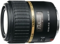

器材库 > APS画幅镜头 > SP AF 60/2 Di II IF Macro G005

详细规格
镜头类型
微距镜头
发布日期
2009-03-24
厂家推荐价格
74,550.00 （日元）
焦距
60mm
等效35mm画幅焦距
90mm
最大光圈
f/2
最小光圈
f/22
视角（对角）
26.2
镜头结构
14片/10组
低/超低色散镜片
2片
光圈叶片
7片
最近对焦距离
23cm
最大放大倍率
1
驱动马达
AF马达
滤镜口径
55mm
镜头卡口
Canon EF, Minolta/Konica-Minolta/Sony AF, Nikon AF
防抖
否
颜色
黑色
尺寸
73×80mm
重量
390g
附件
圆形遮光罩
备注
产品代码：G005
该产品暂无存档的网友点评
产品图 / 样片
外观图